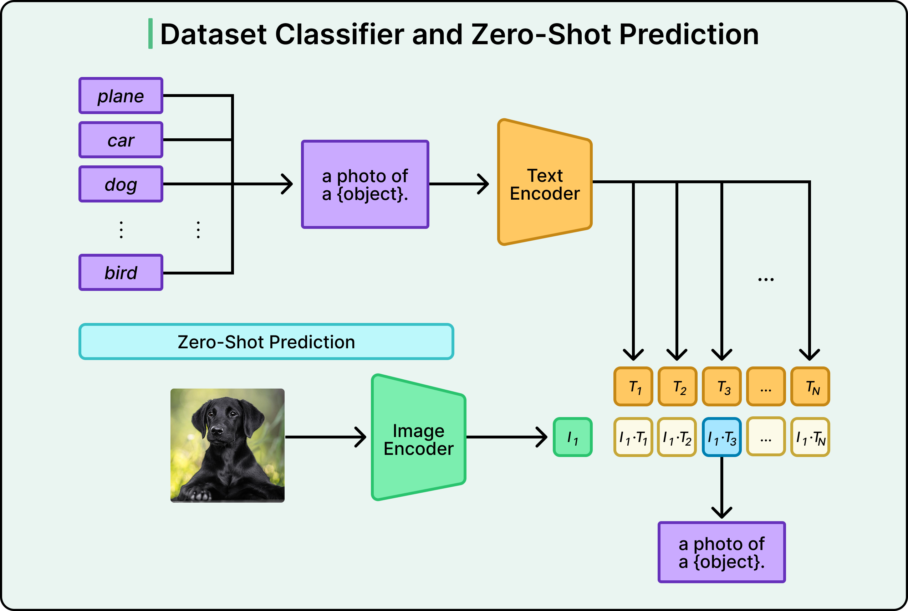

Template 1
a news photo about {class}
We use a pretrained CLIP model as the zero-shot baseline for multimodal classification. Each test image is matched against class-specific text prompts, and the class with the highest image–text similarity is selected as the prediction.

A simple baseline that requires no task-specific training.

Prompt wording matters because class predictions depend entirely on image–text matching.
a news photo about {class}
a newspaper image about {class}
a press photograph of {class}
a journalistic image related to {class}
an editorial photo showing {class}
a media image illustrating {class}
We average these six prompt variants per class to stabilize zero-shot predictions, especially for ambiguous categories such as Opinion, Media, or Your Money.
Short configuration summary for reproducibility.
The zero-shot baseline is competitive, but still below the best few-shot method.
| Method | Test Accuracy | Test Macro-F1 | Inference Time |
|---|---|---|---|
| Zero-shot CLIP | 42.05% | 38.88% | 7.35 ms / sample |
| Best few-shot method | 47.26% | 44.96% | 7.49 ms / sample |
Zero-shot CLIP gives a strong baseline with zero training cost, but few-shot prompt adaptation improves both accuracy and Macro-F1.
A short discussion that keeps the page report-like and not too long.